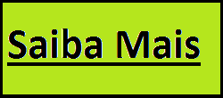

Meu nome é Pedro Paulo Soares Pereira, mais conhecido como Mano Brown.
Nasci na cidade de São Paulo em 22 de abril de 1970.
Sou um rapper brasileiro, vocalista dos Racionais MC's, grupo de rap formado na capital paulista em 1988.
Atualmente estou trabalhando como motorista de UBER.
